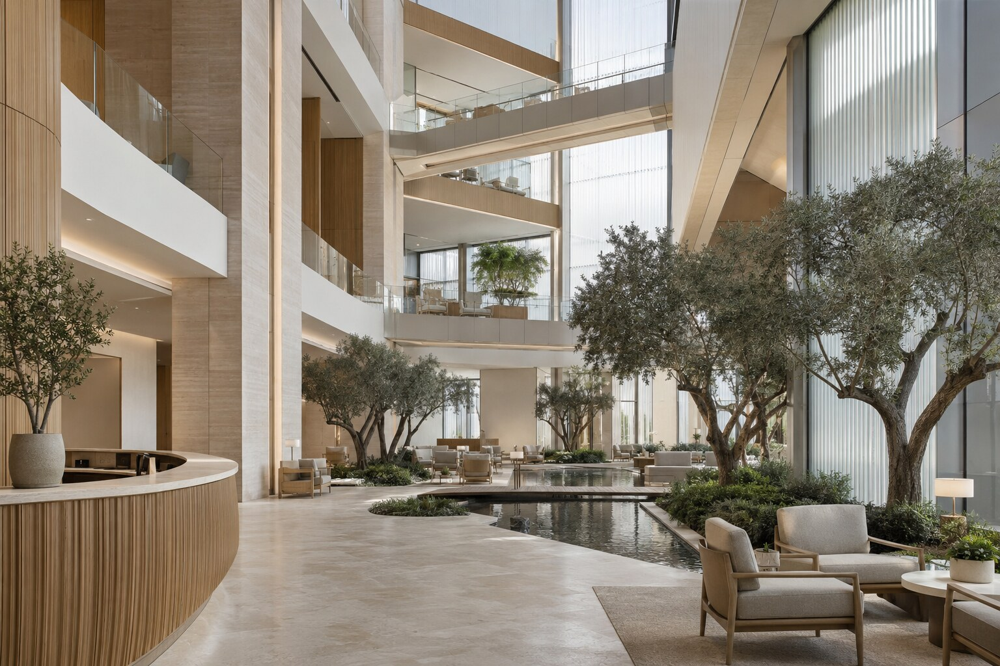
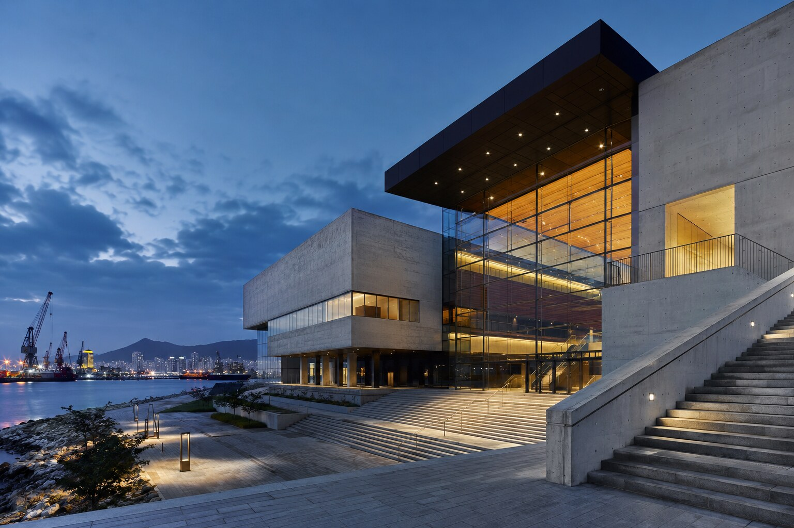

SELECTED HEALTHCARE / 09
오션 메디컬 웰니스OCEAN MEDICAL WELLNESS CENTER
의료의 정확성과 호텔의 안온함을 결합한 대형 통합 웰니스 센터.
VIEW PROJECT09PROJECT OVERVIEW
치유의 과정에서 공간의 긴장을 덜어내다.
크림 트래버틴과 밝은 오크, 리브드 글라스로 시각적 긴장을 낮추고 올리브 정원과 수공간을 곳곳에 배치했습니다. 진료와 테라피, 회복, 휴식의 동선은 분명히 나누되 공간의 인상은 하나로 이어집니다.
PROJECT GALLERY
공간의 장면들
